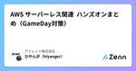
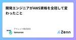

アイレット株式会社のフィード
https://zenn.dev/p/iret
アイレットは、2023年10月15日に会社設立20周年を迎えました。 システム開発会社として創業し、国内でもいち早くクラウドサービス事業に乗り出しました。現在では、UI/UXデザインからシステム開発、インフラ構築・運用までワンストップで提供しています。経験豊富なメンバーがお客様の
フィード

AWS サーバーレス関連 ハンズオンまとめ（GameDay対策）
アイレット株式会社のフィード
サーバーレス関連のハンズオンしたいけど、何やればいいの？って人へ。AWS公式のハンズオンは超上質なので、うまく活用しましょう。このレベルのハンズオンが無料でできちゃうのは事件ですね。後半ではAWS GameDayのサーバーレス対策ものせてます✏️各ハンズオン、スムーズにいけば1~2時間で完了できます。 サーバーレス ハンズオン サーバーレスアーキテクチャで翻訳WebAPIを構築するhttps://pages.awscloud.com/JAPAN-event-OE-Hands-on-for-Beginners-Serverless-1-2022-confirmation_422...
7日前

開発エンジニアがAWS資格を全冠して変わったこと 1
1
アイレット株式会社のフィード
はじめに2024年の2月に当時受験可能だった12種類のAWS資格を取得し、無事AWS資格全冠を達成しました。今回はAWS資格全冠の記念に振り返りをしてみました。 資格一覧一覧に書き出してみると、Cloud Practitionerが一番点数が低いですね。アソシエイトは知識や経験もない中での挑戦だったため点数が低めですが、スペシャリティやプロフェッショナルの試験以上に苦労した記憶です。試験名受験日スコアAWS Certified Cloud Practitioner2021/12/5748AWS Certified Solutions Arc...
10日前

AWS Community Buildersになるためにやったこと
アイレット株式会社のフィード
2024年のAWS Community Buildersに選出いただきました🎉どうすればなれるの？という基準が気になる方もいるとおもいますので、私が実際にやったことをメインにその他選考の内容等をお伝えしたいと思います！ AWS Community Buildersとはまずこれがわからないといけないと思うので。簡単にいうとAWSのアウトプットや、コミュニティ活動を頑張った人がAWSから選ばれるものです。公式では下記のように定義されています。!AWSコミュニティビルダーズプログラムは、知識の共有や技術コミュニティとの連携に熱心なAWS技術愛好家や新興のソートリーダーに、技術リソ...
17日前
LangChainでBigQueryのデータをLLMに利用させてみる
アイレット株式会社のフィード
https://cloud.google.com/blog/ja/products/ai-machine-learning/open-source-framework-for-connecting-llms-to-your-data先月公開されたこちらのブログを参考に、LangChainを使ってBigQueryのデータをLLMに動的に参照させて問いかけに答えられるか試してみました。 データセットのスキーマ情報を読み込むfrom langchain.document_loaders import BigQueryLoaderquery = f"""SELECT table_n...
1ヶ月前
5年かけてAWSとGoogle Cloudの認定資格を全冠したので振り返る
アイレット株式会社のフィード
はじめにオンプレでの開発しか経験のなかった私が、2019年の転職を機にAWSやGoogle Cloudを利用するようになり、勉強のために認定資格を取り始めてだいたい5年。ついにAWSとGoogle Cloudの両認定資格のコンプリートに至ったので振り返ろうと思います。 受験履歴日付プラットフォーム試験備考2024/02/11Google CloudProfessional Machine Learning EngineerGoogle Cloud全冠達成👑2024/01/14Google CloudProfessional Cloud ...
1ヶ月前
Pollyを使ってSlackで回答できる出社アンケートを運用してみた
アイレット株式会社のフィード
やりたかったこと私のチームでは出社とリモートを組み合わせたハイブリットワークで業務を行っています（リモートの比率の方が多いですが）。たまに出社したときにコミュニケーションの機会になるように、また誰もいなくて寂しくなったりしないように、チームの誰が出社しようとしてるか簡単にわかるような仕組みが作れないかと考えていました。 やってみたことうちではGoogleカレンダーを使っているので、勤務場所を設定する機能を使ってみましたが、このためにみんなの予定を見に行くのはちょっと億劫です。簡単に出社の意思表示ができ、全員の回答がすぐに見られる場所はどこかなと考えると、普段から使っている...
2ヶ月前
AWS Glueのバージョン4へのアップデートでのエラー対処
アイレット株式会社のフィード
エラー内容https://docs.aws.amazon.com/glue/latest/dg/glue-version-support-policy.html既存のバージョン2のGlueジョブが2024年1月末でサポート終了になるのでアップデートしたところ見慣れないエラーで失敗してしまった。An error occurred while calling o165.save. File already exists:s3://my-bucket/data/part-00051-50c0f3a2-eba1-521b-1b0a-c6652c129376-a000.csvCSVの書...
3ヶ月前
CloudFront FunctionsのBasic認証で認証情報をCloudFront KeyValueStoreで管理する
アイレット株式会社のフィード
はじめに先日リリースされたばかりの「CloudFront KeyValueStore」。https://aws.amazon.com/jp/blogs/aws/introducing-amazon-cloudfront-keyvaluestore-a-low-latency-datastore-for-cloudfront-functions/これにより、CloudFront Functions間で共有できるKey-valueストアが使えるようになりました。用途としては、URLの書き換えパターンやリダイレクトの遷移先を保存したり、オリジンを切り替えたり、アクセス拒否の設定を保...
4ヶ月前
初めての技術書典15にAWS本で出典するまでの全記録
アイレット株式会社のフィード
2023/11/12 Zennで作ったCloudFormation本の内容を元に、技術書典15で出典してきました☺️・Zenn本（こいつを）https://zenn.dev/hiyanger/books/6d510a8f66093a・技術書典15での出品ページ（こうした）https://techbookfest.org/product/0T5v5xXrsWvH3MjWUKEne?productVariantID=cUiUKYt4ye7hyMxEtwQHgN技術書典とは技術書の同人誌イベントです。つまり個人間で簡単に本を売ったり買ったりすることができます。https://te...
4ヶ月前
VS CodeでAWS SAMのローカルデバッグをやってみる
アイレット株式会社のフィード
準備既にAWS SAMアプリがある場合は不要ですが、ない場合はまずは事前準備。 適当なAWS SAMアプリを用意するこちらのHello Worldアプリを作りましょう（デプロイは必要ありません）。https://docs.aws.amazon.com/ja_jp/serverless-application-model/latest/developerguide/serverless-getting-started-hello-world.html手順に従ってsam initが終わったら、ターミナルで以下を実行。sam local start-api別のターミナルから...
7ヶ月前
endoflife.dateとLambdaを使ってSlackに自動でプロダクトのEOLを通知する
アイレット株式会社のフィード
やりたいことhttps://zenn.dev/danishi/articles/endoflife-dateendoflife.dateにはさまざまなプロダクトのEOL情報がまとめられています。また、その情報を取得できるAPIも用意されています。普段よく使うプロダクトのEOLが気づいたら間近に迫って大慌てで対応することにならないように、毎日自動チェックを行いその結果をSlack通知できるようにしてみようと思いました。 手順 事前準備通知用のSlackチャンネルとSlack Appを作ってIncoming Webhooks URLを作っておきます。 Lambda...
10ヶ月前
Laravelを9から10へアップグレードしてみた
アイレット株式会社のフィード
普段使っているテンプレのプロジェクトをLaravel9から10へアップグレードしたので手順を残します。https://readouble.com/laravel/10.x/ja/upgrade.htmlまずはcomposer.jsonを書き換えます。また、今回PHPのバージョンを8.2.4にしています。composer.json "require": {- "php": "^8.0",+ "php": "^8.1", "aws/aws-sdk-php-laravel": "^3.7", "davejamesm...
1年前
AWS Top Engineersになるためには、結局何をすれば良いのか？
アイレット株式会社のフィード
AWS Top Engineersの応募基準って、パッと見だと直感的に把握するのは難しいですよね。私もスタートからく、くらいてりあ？となりました。なのでこの記事では、内容をできるだけかみ砕いて、何をすればTop Engineersになれるのかというのをより具体化していこうと思います。https://aws.amazon.com/jp/blogs/psa/2023-aws-top-engineers/ そもそもAWS Top Engineersって何？ご存じない方もいらっしゃるかと思うので、簡単に説明します。まず前提としてAWSパートナー企業に所属していることと、特定の認定資格を取...
1年前
【AWS Summit Tokyo 2023】各ブースの人たちと実際にお話して得られたAWS関連製品の情報
アイレット株式会社のフィード
２日目の午後だけオフラインで参加してきました。半日だけですが、すごい楽しかったです。自分の立ち回りから得られた情報を書いていきます📒 EXPOこれが楽しかったので、ほぼこれメインで立ち回りました。 やっぱり企業の人たちと1:1で話せるのは貴重な機会だなと感じました。全体の傾向としてはアプリやインフラそのものではなく、ツールが多くて煩雑になりすぎたアプリやインフラの間をどうつなぎこめるかというポイントに注目が集まっているように感じました。いかに無駄な管理をせず開発するか、分析するか、監視するかという点です。 分析系セキュリティ系についで、多いイメージでした。個人的に担当している...
1年前
[AWS Summit Tokyo 2023] AWS Jam体験記
アイレット株式会社のフィード
このページについて今回久しぶりにオフラインでAWS Summit Tokyoに行ってきました。そしてこの日、AWS Jamのみ参加してきましたので、その体験記を残しておきます。チャレンジ内容自体はブログに書くことができないのでご了承ください。 AWS JamとはAWS Jamとは、AWSが主催するワークショップ形式のイベントです。AWSの様々なサービスを実際に手を動かしながら学ぶことができるため、参加者はAWSのサービスや開発手法をより深く理解することができます。AWS Jamでは、複数のチャレンジが設けられており、各チャレンジではAWSのサービスを使用したハンズオン形...
1年前
【Looker】LookMLで年度のディメンションを定義する
アイレット株式会社のフィード
やりたかったこと今年度の売上と前年度の売上の比較などを行う際に、データベース（BigQuery）には年度のカラムがなく、LookML側で年度のディメンションが欲しかった。 ディメンションの定義ここでは例として売上テーブルの請求日（billing_date）から請求年度を求めます。salesビューの定義に次のディメンションを定義します。views/sales.view.lkml dimension: billing_fy { label: "請求年度" type: string description: "会計年度は４月から翌３月" s...
1年前
【Google Cloud 認定資格】試験によく出たサービスだけをAWSで読み替える（ACE / PCA共通）
アイレット株式会社のフィード
Associate Cloud Engineer、Professional Cloud Architectを取得したので、試験にでたサービスのみAWS読み替え表をつくりました。辞書代わりにお使いください📖※IAMやVPCなどの読みかえ不要なものはのせてません。※AWSとGCPのサービスで機能が異なるものが多々あります。そのため項目が複数あったり、実際にはどちらかのサービス機能を網羅しきれなかったりしています。そういったサービスも実際に試験にでるものしかのせていません。 EC2GoogleAWS出題頻度Compute EngineEC2★★★Auto...
1年前
【AWS認定】12冠のベストな勉強法と得たもの
アイレット株式会社のフィード
本日最後の資格、SAPを取得し12冠になりました。結果、体験から考えたベストな受験法と、１２冠によって何が得られるのかというのを書いていきたいと思います✨ ベストな受験法目的は資格をとることです。なのでそこを割り切って、過去の経験からいかに最小の労力でとれるかを考えます。 受験の順番CLP→SAA→SOA→SCS→ANS→SAPro → DVA→DBS→DAS→DOP→MLS→SAPアーキテクト系→開発系→それ以外 の流れです。前の資格をもっていることで次の資格に有利に働くパターンがあるのでそこだけ優位に進めましょう。難易度はSAProが長文が多くてちょいきついくらいで、正...
1年前
【AWS認定】DOP-C01 合格まで最低限やればよいこと
アイレット株式会社のフィード
2/6にAWS認定のDOP-C01を792点で取得しました。約２週間の学習で取得したので、その内容を記載します😏 勉強時間40hくらい 勉強内容Teck Stock 31~64を2周 + 間違えた全部の問題が解答できるようになるまで※参考：学習時の平均得点１周目：48 ２週目：68 試験①Teck Stockの問題とほぼ同等のもの：1割②既存知識で考えればとけそう：8割③既存知識で考えても難しそう：1割いつもの試験よりもTeck Stockと同等の問題が少なかったように感じました。ただ、解答のポイントを確実におさえておけば問題なく解ける問題が多かったです。逆...
1年前
New Relic Workflowのエンリッチメントでログを取得する
アイレット株式会社のフィード
このページについて本記事は New Relic Advent Calendar 2022 の16日目です。New RelicにはWorkflowという機能があります。さらにWorkflowのエンリッチメントを使うと、ログの中身を取得できるのでご紹介します。 Workflowとはワークフローでは、課題に関する通知をいつ、どこで受け取るかをコントロールし、適切な情報を関連する担当者やチームにトンネリングし、課題の通知をNew Relicの追加データで充実させることができます。https://docs.newrelic.com/jp/docs/alerts-applied-...
1年前